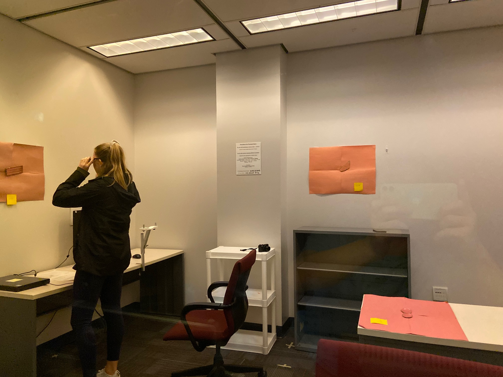

About Me
Nanjie (Jimmy) Rao
I am currently a Ph.D. student at the University of Florida under the supervision of Dr. Sharon Lynn Chu in The Embodied Learning & Experience Lab. I have led various research projects and published papers across multiple disciplines including Human-Computer Interaction, Adaptive Visualization, Personalized Learning and Teaching, and Quantified Self. I am always determined to use technology to log and understand human activities, as well as the motivation behind user behavior (such as using smart glasses for everyday learning, enactment for digital storytelling, and chrome extension to identify learning activities).
Education
University of Florida, Ph.D. Student in Human-Centered Computing, 2018-2023(expected)
Texas A&M University, Ph.D. Student in Electrical Engineering, 2016-2018
Huazhong University of Science and Technology, Bachelor in Optical and Electrical Information Engineering, 2012-2016
Publications
-
Rao, N., & Chu, S. L. (2021, July). Enhancing the Visual Efficiency for communicating students’ personal relevant information. In 2021 International Conference on Advanced Learning Technologies (ICALT) (pp. 14-16). IEEE.
-
Rao, N., Chu, S. L., & Chenore, R. (2021, July). Flexible Low-Cost Digital Puppet System. In International Conference on Human-Computer Interaction. Springer, Cham.
-
Li, Q., Chu, S., Rao, N., & Nourani, M. (2020, October). Understanding the Effects of Explanation Types and User Motivations on Recommender System Use. In Proceedings of the AAAI Conference on Human Computation and Crowdsourcing (Vol. 8, No. 1, pp. 83-91).
-
Zarei, N., Chu, S. L., Quek, F., Rao, N., & Brown, S. A. (2020, April). Investigating the Effects of Self-Avatars and Story-Relevant Avatars on Children's Creative Storytelling. In Proceedings of the 2020 CHI Conference on Human Factors in Computing Systems (pp. 1-11).
-
Rao, N., Zhang L., Chu, S. L., Jurczyk, K., Candelora, C., Su, S., & Kozlin, C. (2020, March). Investigating the Necessity of Meaningful Context Anchoring in Augmented Reality Smart Glasses Interaction for Everyday Learning. In 2020 IEEE Conference on Virtual Reality (VR). IEEE (Workshop & Poster)
-
Rao, N., Chu, S. L., Faris, R. W., & Ospina, D. (2019, November). The Effects of Interactive Emotional Priming on Storytelling: An Exploratory Study. In International Conference on Interactive Digital Storytelling (pp. 395-404). Springer, Cham.
-
Rao, Z., Rao, N., Sun H., & Weng Y. (2019). Discussion on Artificial Intelligence Changing Hospital Management. China Digital Medicine, 14 (1), 24-25.
Leadership Experience
XPRIZE ANA Avatar Competition, Miami Sep 2021
- On-site team leader of semifinalist Team Limitless
- Assembled, tested, and debugged an avatar system that can transport human presence to a remote location in real time: Motion Tracking with Laser Systems + Humanoid.
University of Florida, Gainesville Sep 2019 – Present
- Graduate Mentor
- Guided 8 undergraduate and 2 graduate students in research projects.
Skills and Interests
Software Development (Android, Java, C++, C, C#, Python, JavaScript, HTML, MySQL)
Hardware Development (TI microcontrollers, PCB CAD, Prototype Design, FPGA)
UX Research (InVision Prototype Feedback & Testing, Qualtrics, Chrome Extension for User Activity Data Collection, Qualitative Coding with MAXQDA, Mturk, Focus Group)
Statistical Analysis (Tableau, SPSS, R, Data Storytelling with Visualization, Excel)
AI Tools (TensorFlow, Scikit Learn, YOLO, CoreNLP, DALLE-pytorch, WebGazer)
Life (Certified Rank 2 Go Chess Master, Ballroom Dancing, Soccer and its Esports games)
Projects
Dissertation: Support teachers in contextualizing concepts with students’ relevant experience with visualization
Proposed visualizing students’ individual experiences for the teacher during instruction may help adapt the lesson in real-time to the students in the class.
Designed and conducted a study to assess the visual efficiency of visualizations (plain text, graphical mind map, and story illustration) to communicate students’ experiences, measured as response accuracy, response time, and mental effort.
Discovered visual efficiency can be improved by using proper visualization design.
NSF project: To Enact, To Tell, To Write: A Bridge to Expressive Writing through Digital Enactment
Reviewed the different approaches that have been used for puppet-based storytelling system implementations, and then proposed and implemented a flexible low-cost puppet-based storytelling system that used a combination of vision- and sensor-based tracking, designed and conducted an online perception study to evaluate the performance of the system due to the impact of COVID-19.

Learning Identifier
Learning is the process of acquiring new understanding, knowledge, behaviors, skills, values, attitudes, and preferences. In this project, we aim to identify the characteristics of learning activities in a browser. Previously we have developed a tool in the form of a Chrome browser extension (named as tracker toolbox), which allows us to collect and view statistics of the data being tracked, including eye tracking, activity time tracking, mouse interactions, and content tracking. We are testing the tracker toolbox, logging and examining the collected data, marking and visualizing characteristics of different learning activities.